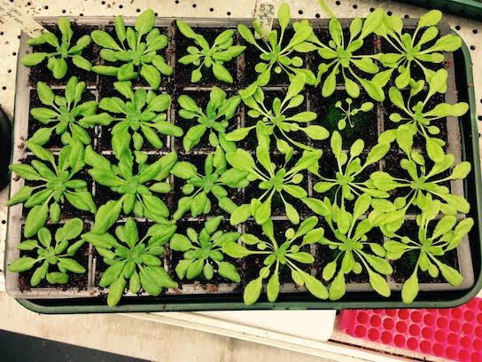

Jordan Brown
I started my PhD in the Casson lab in February 2014, researching stomatal development in the model organism Arabidopsis. I am interested in how light and carbon dioxide signals interact to regulate stomatal development and their impact on plant water performance. If we can understand the regulation of plant water use and performance, we could manipulate this response to produce plant varieties with the desired water use and performance rates needed for a more sustainable future.

Contact me
- Email: jbrown9@sheffield.ac.uk
- Twitter: JBrown_09
- LinkedIn: Jordan Brown